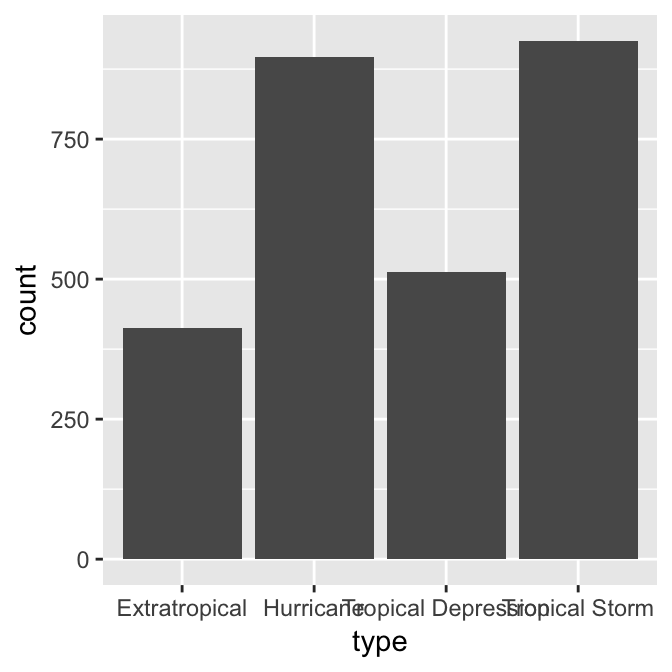
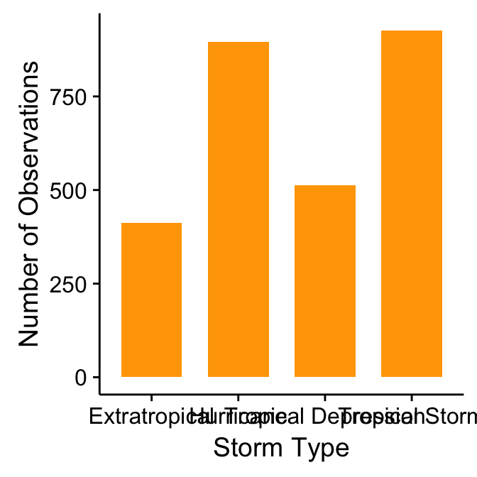

Chapter 21 Exploring categorical variables
This chapter will consider how to go about exploring the sample distribution of a categorical variable. Using the storms data from the nasaweather package (remember to load and attach the package), we’ll review some basic descriptive statistics and visualisations that are appropriate for categorical variables.
21.1 Understanding categorical variables
Exploring categorical variables is generally simpler than working with numeric variables because we have fewer options, or at least life is simpler if we only require basic summaries. We’ll work with the year and type variables in storms to illustrate the key ideas.
Which kind of categorical variable is type? There are four storm categories in type. We can use the unique function to print these for us:
unique(storms$type)## [1] "Tropical Depression" "Tropical Storm" "Hurricane"
## [4] "Extratropical"The first question we should ask is, is type an ordinal or nominal variable? It’s hard to know how to classify type without knowing something about tropical storms. Some googling indicates that type can reasonably be considered an ordinal variable: a tropical depression is the least severe storm and a hurricane is the most severe class; in between are extra tropical and tropical storm categories.
What about the year variable? Years are obviously ordered from early to late and we might be interested in how some aspect of our data changes over time. In this case we might consider treating year either as a numeric variable, or perhaps as an ordinal categorical variable. Alternatively, if the question is simply, ‘do the data vary from one year to the next’ without any concern for trends, it’s perfectly reasonable to treat year as a nominal categorical variable.
This illustrates an important idea: the classification of a variable will often depend on the objectives of an analysis. The classification of a variable matters because it influences how we choose to summarise it, how we interpret its relationship with other variables, and whether a specific statistical model is appropriate for our data or not. Fortunately, our choice of classification is less important when we are just trying to summarise the variable numerically or graphically. For now, let’s assume that it’s fine to treat year as a categorical variable.
21.1.1 Numerical summaries
When we calculate summaries of categorical variables we are aiming to describe the sample distribution of the variable, just as with numeric variables. The general question we need to address is, ‘what are the relative frequencies of different categories?’ We need to understand which catergories are common and which are rare. Since a categorical variable takes a finite number of possible values, the simplest thing to do is tabulate the number of occurances of each type. We’ve seen how the table function is used to do this:
table(storms$type)##
## Extratropical Hurricane Tropical Depression
## 412 896 513
## Tropical Storm
## 926This shows that the number of observations associated with hurricanes and tropical storms are about equal, that the number of observations associated with extratropical and tropical systems is similar, and the former pair of categories are more common than the latter. This indicates that in general, storm systems in Central America spend relatively more time in the more severe classes.
Raw frequencies give us information about the rates of occurance of different categories in a dataset. However, it’s difficult to compare raw counts across different data sets if the sample sizes vary (which they usually do). This is why we often convert counts to proportions. To do this, we have to divide each count by the total count across all categories. This is easy to do in R because it’s vectorised:
type_counts <- table(storms$type)
type_counts / sum(type_counts)##
## Extratropical Hurricane Tropical Depression
## 0.1499818 0.3261740 0.1867492
## Tropical Storm
## 0.3370950So about 2/3 of observations are associated with hurricanes and tropical storms, with a roughly equal split, and the remaining 1/3 associated with less severe storms.
What about measuring the central tendency of a categorical sample distribution? Various measures exist, but these tend to be less useful than those used to describe numeric variables. We can we can find the sample mode of ordinal and nominal variables easily though (in contrast to numeric variables, where it is difficult to define). This is just the most common category. For example, the tropical storm category is the modal value of the type variable. Only just though. The proportion of tropical storm observations is 0.34, while the proportion of hurricane observations is 0.33. These are very similar, and it’s not hard to imagine that modal observation might have been the hurricane category in a different sample. The sample mode is sensitive to chance variation when two categories occur at similar frequencies.
It is possible to calculate a sample median of a categorical variable, but only for the ordinal case. The median value is the one that lies in the middle of an ordered set of values—it makes no sense to talk about “the middle” of a set of nominal values that have no inherent order. Unfortunately, even for an ordinal variables the sample median is not precisely defined. Imagine that we’re working with a variable with only two categories: ‘big’ vs. ‘small’, and exactly 50% of the values are ‘small’ value and 50% are large. What is the median in this case? Because the median is not always well-defined, the developers of base R have chosen not to implement a function to calculate the median of ordinal variables (a few packages contain functions to do this though).
Be careful with median
Unfortunately, if we apply the median function to a character vector it will give us an answer, e.g. median(storms$type) will spit something out. It is very likely to give us the wrong answer though. R has no way of knowing which categories are “high” and which are “low”, so just sorts the elements of type alphabetically and then finds the middle value of this vector. If we really have to find the median value of an ordinal value we can do it by first converting the categories to integers— assigning 1 to the lowest category, 2 to the next lowest, and so on— and then use the median function to find out which value is the median.
21.2 Graphical summaries of categorical variables
The most common graphical tool used to summarise a categorical variable is a bar chart. A bar chart (or bar graph) is a plot that presents summaries of grouped data with rectangular bars. The lengths of the bars is proportional to the values they represent. When summarising a single categorical variable, the length of the bars should show the raw counts or proportions of each category.
Constructing a bar graph to display the counts is very easy with ggplot2. We will do this for the type variable. As always, we start by using the ggplot function to construct a graphical object containing the necessary default data and aesthetic mapping.
bar_plt <- ggplot(storms, aes(x = type)) We’ve called the object bar_plt, for obvious reasons. Notice that we only need to define one aesthetic mapping: we mapped type to the x axis. This produces a bar plot with vertical bars.
From here we follow the usual ggplot2 workflow, meaning the next step is to add a layer using one of the geom_XX functions. The sensibly named geom_bar is the one we need:
bar_plt <- bar_plt + geom_bar()
summary(bar_plt) ## data: name, year, month, day, hour, lat, long, pressure, wind,
## type, seasday [2747x11]
## mapping: x = type
## faceting: <ggproto object: Class FacetNull, Facet>
## compute_layout: function
## draw_back: function
## draw_front: function
## draw_labels: function
## draw_panels: function
## finish_data: function
## init_scales: function
## map: function
## map_data: function
## params: list
## render_back: function
## render_front: function
## render_panels: function
## setup_data: function
## setup_params: function
## shrink: TRUE
## train: function
## train_positions: function
## train_scales: function
## vars: function
## super: <ggproto object: Class FacetNull, Facet>
## -----------------------------------
## geom_bar: width = NULL, na.rm = FALSE
## stat_count: width = NULL, na.rm = FALSE
## position_stackLook at the layer information below ----. The geom_bar function sets the stat to “bin”. Binning a categorical variable is anlagous to binning a numeric variable. The only difference is that there is no need to specify bin widths because type is categorical, i.e. ggplot2 will sum up the number of observations associated with every category of type. Here’s the resulting figure:
bar_plt
This is the same summary information we produced using the table function, only now it’s presented in graphical form. We can customise this bar graph if needed with functions like xlab and ylab, and by setting various properties inside geom_bar. For example:
ggplot(storms, aes(x = type)) +
geom_bar(fill = "orange", width = 0.7) +
xlab("Storm Type") + ylab("Number of Observations") The only new thing here is that we used the width argument of geom_bar to make the bars a little narrower than the default.
There is one slight problem with this graph: the order in which the different groups is presented does not reflect the ordinal scale. This occurs because ggplot2 does not “know” that we want to treat type as a ordinal variable. There is no way for ggplot2 to “guess” the appropriate order, so it uses the alphabetical ordering of the category names to set the order of the bars.
To fix this we need to customise the scale associated with the ‘x’ aesthetic. We can start by making a short character vector containing all the category names in the focal variable, ensuring these are listed in the order they need to be plotted in:
ords <- c("Tropical Depression", "Extratropical", "Tropical Storm", "Hurricane")Keep an eye on the spelling too—R is not forgiving of spelling errors. We use this with the limits argument of the scale_x_discrete function to fix the ordering:
ggplot(storms, aes(x = type)) +
geom_bar(fill = "orange", width = 0.7) +
scale_x_discrete(limits = ords) +
xlab("Storm Type") + ylab("Number of Observations") We had to use one of the
We had to use one of the scale_x_YY functions here because we needed to change the way an aesthetic appears. We use scale_x_discrete because ‘discrete’ is gplot2-speak for ‘categorical’, which is what we have mapped to the ‘x’ aesthetic.
What else might we change? The categories of type have quite long names, meaning the axis labels are all bunched together. One way to fix this is to make the labels smaller or rotate them via the ‘themes’ system. Here’s an alternative solution: just flip the x and y axes to make a horizontal bar chart. We can do this with the coord_flip function (this is new):
ggplot(storms, aes(x = type)) +
geom_bar(fill = "orange", width = 0.7) +
scale_x_discrete(limits = ords) +
coord_flip() +
xlab("Storm Type") + ylab("Number of Observations")